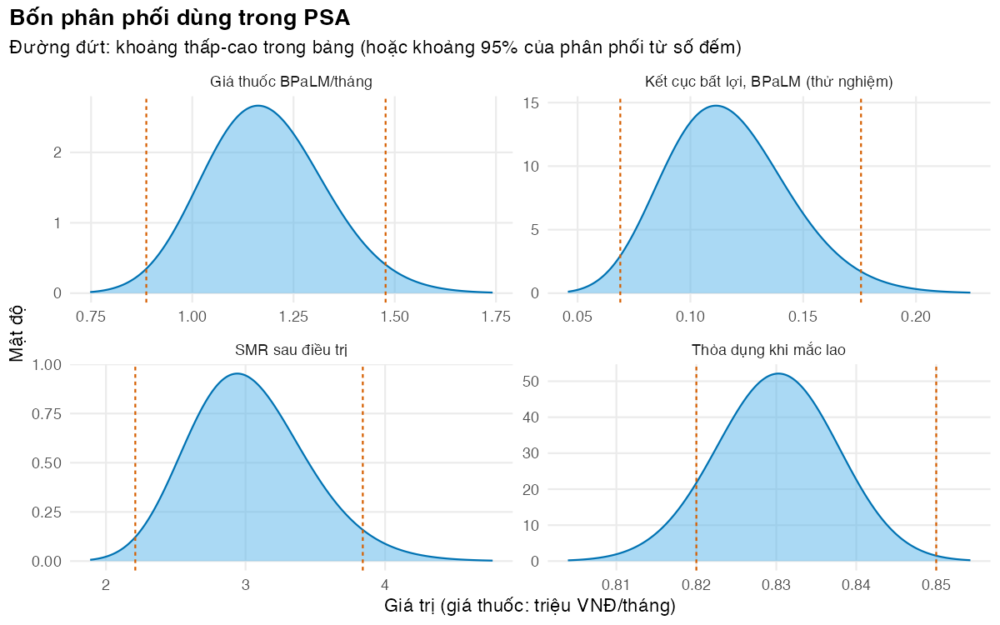

Gán phân phối beta, gamma, log-chuẩn và Dirichlet cho tham số của mô hình MDR/RR-TB từ số liệu công bố
Vì sao bạn nên quan tâm?
Năm 2024, 629 người bệnh lao kháng thuốc nằm điều trị nội trú tại Bệnh viện Phổi Trung ương. Trung bình mỗi đợt tốn 35.17 triệu VNĐ, nhưng một nửa số người tốn dưới 17.68 triệu; dù thuốc lao kháng thuốc được Chương trình Chống lao cấp miễn phí, người bệnh vẫn tự trả 38.4% chi phí, khoảng 13.5 triệu VNĐ, bằng 2.5 tháng lương tối thiểu vùng I (Nguyễn và Nguyễn 2025; Chính phủ 2025). Đưa trung bình hay trung vị vào mô hình, và coi khoảng tứ phân vị là bất định hay không? Chọn sai, chi phí biến cố bất lợi lệch 2.0 lần và độ rộng của nó trong PSA lệch 2.6 lần. Bài này dạy cách biến những con số công bố như vậy thành phân phối cho PSA.
Mục tiêu học tập
Sau bài này, bạn có thể:
Chọn họ phân phối phù hợp với miền giá trị và cách ước lượng của từng tham số.
Suy ra tham số của phân phối bằng phương pháp mô-men (method of moments) từ trung bình và sai số chuẩn (SE) hoặc khoảng tin cậy, và từ số đếm.
Dùng phân phối Dirichlet cho một bộ tỷ lệ loại trừ nhau có tổng bằng 1.
Nhận ra những con số công bố không mô tả bất định của ước lượng (khoảng tứ phân vị, khoảng giữa các nghiên cứu, quy ước) và xử lý chúng.
Rút mẫu có tương quan cho hai tham số bằng copula Gauss (Gaussian copula).
Ý chính
Chọn phân phối theo miền giá trị: xác suất và thỏa dụng → beta; chi phí, thời gian, tỷ suất → gamma; tỷ số (RR, OR, HR, SMR) → log-chuẩn; một bộ tỷ lệ có tổng bằng 1 → Dirichlet (Briggs và c.s. 2012).
Phân phối trong PSA mô tả bất định của giá trị trung bình trong quần thể, nên độ rộng của nó đến từ SE, không phải từ độ lệch chuẩn (SD) giữa người bệnh.
Từ KTC 95% đối xứng: \(\text{SE} \approx (\text{cao} - \text{thấp}) / (2 \times 1.96)\). Với tỷ số, làm phép tính này trên thang log.
Từ số đếm \(r\) trên \(n\): \(\text{Beta}(r, n - r)\). Từ \(r\) sự kiện trên \(T\) người-năm: \(\text{Gamma}(r, T)\). Từ số đếm của nhiều nhóm: \(\text{Dirichlet}(n_1, \dots, n_K)\)(Briggs, Ades, và Price 2003).
Luôn kiểm tra: phân vị 2.5% và 97.5% của phân phối đã khớp có gần khoảng công bố không? Phương pháp mô-men chỉ khớp tốt khi khoảng gần đối xứng.
Mặc định PSA coi các tham số độc lập. Dirichlet tự xử lý ràng buộc “tổng bằng 1”; các tương quan khác cần một phân phối đồng thời hoặc một copula.
Phân phối chuẩn ít khi phù hợp cho tham số mô hình: nó cho xác suất âm hoặc lớn hơn 1, và chi phí âm. Thỏa dụng có thể âm (trạng thái tệ hơn tử vong); khi đó người ta mô hình hóa mức giảm thỏa dụng \(1 - u\) bằng gamma hoặc log-chuẩn. Ở đây mọi thỏa dụng đều gần 1, nên beta là đủ.
Phương pháp mô-men
Phương pháp mô-men chọn tham số của phân phối sao cho trung bình và phương sai của nó bằng trung bình \(m\) và bình phương sai số chuẩn \(s^2\) đã công bố:
\[
\text{Gamma}(k, \text{rate}):\quad k = \frac{m^2}{s^2},\quad \text{rate} = \frac{m}{s^2}.
\]
Beta chỉ tồn tại khi \(s^2 < m(1-m)\); beta_mom() dừng lại nếu điều kiện này sai. Với tỷ số, KTC đối xứng trên thang log, nên log-chuẩn có \(\mu = \log(\text{ước lượng})\) và \(\sigma = [\log(\text{cao}) - \log(\text{thấp})] / (2 \times 1.96)\). Khi đó ước lượng điểm là trung vị; trung bình là \(e^{\mu + \sigma^2/2}\), lớn hơn một chút. Ví dụ, SMR sau điều trị có giá trị cơ sở 3.0 (MacLean và c.s. 2026) và độ rộng lấy từ KTC 95% 2.21–3.84 của SMR gộp trong một phân tích gộp (Romanowski và c.s. 2019), như M02 đã làm.
Từ số đếm
Nếu \(r\) trên \(n\) người có sự kiện, \(\text{Beta}(r, n-r)\) có trung bình \(r/n\) và độ rộng giảm theo \(n\). Kết quả cuối của TB-PRACTECAL cho số đếm cụ thể: 16/137 người dùng BPaLM và 56/137 người dùng chăm sóc chuẩn có kết cục bất lợi; khoảng 23% và 48% trong 151 người mỗi nhánh có biến cố bất lợi nặng (Nyang’wa và c.s. 2024). Với một tỷ suất, \(r\) sự kiện trên \(T\) người-năm cho \(\text{Gamma}(r, T)\): khoảng 7.9 lượt quay lại điều trị mỗi 100 người-năm, đo trên 2,686 người-năm sau khi bỏ điều trị (lost to follow-up) ở Georgia (Adamashvili và c.s. 2022). Với nhiều kết cục loại trừ nhau, \(\text{Dirichlet}(n_1, \dots, n_K)\) cho mỗi kết cục một phân phối biên \(\text{Beta}(n_k, n - n_k)\), và mọi bộ giá trị rút ra đều có tổng bằng 1. Đoàn hệ toàn quốc có 4,814 người bệnh (Nguyen và c.s. 2026), nên sai số lấy mẫu của các tỷ lệ kết cục Việt Nam rất nhỏ. Nhưng Dirichlet chỉ mô tả sai số lấy mẫu, không mô tả sai lệch: 43% ca tử vong khi điều trị không được báo cáo cho Chương trình Chống lao (MacLean và c.s. 2026). Độ chính xác (precision) không phải độ đúng (accuracy); sai lệch này chỉ đưa vào được bằng kịch bản (Bài 1).
Khi con số công bố không phải bất định của trung bình
Bốn tình huống trong M03 cần cẩn thận:
Khoảng tứ phân vị và trung vị của dữ liệu cá nhân. Chi phí một đợt nằm viện có trung vị US$707.24 và khoảng tứ phân vị (IQR) US$429.32 đến US$1,328.36 (Ngo và c.s. 2026). IQR mô tả người bệnh khác nhau ra sao. Bất định của trung bình là \(\text{SE} = \text{SD}/\sqrt{n}\); bài tiếng Việt của cùng nhóm tác giả, trên cùng 629 người bệnh, công bố cả SD (Nguyễn và Nguyễn 2025), nên không cần đoán SD từ IQR. Phân tích chi phí-hiệu quả cần chi phí trung bình (ngân sách bằng trung bình nhân số người), còn M02 dùng trung vị, nên chi phí biến cố bất lợi bị đánh thấp (kịch bản ở Bài 1).
Khoảng giữa các nghiên cứu. Tỷ lệ tử vong 10 năm của lao không điều trị nằm trong khoảng 53% đến 86% giữa các nghiên cứu, trung bình có trọng số 70% (Tiemersma và c.s. 2011). Đây không phải KTC; dùng nó như khoảng 95% là một giả định.
Độ rộng quy ước trên giá có nguồn. Giá thuốc là giá GDF và giá dịch vụ là giá BHYT công bố (ITPC-EECA 2025; McConnell 2025; Bộ Y tế 2024), nhưng giá Việt Nam thật sự trả (vận chuyển, phân phối, tần suất xét nghiệm, hạng bệnh viện) không có số liệu. M03 dùng quy ước ±25%, ghi rõ trong cột range_type.
Cỡ mẫu chưa biết. Tóm tắt bài báo cho tỷ lệ thành công 76.2% của phác đồ ngắn có bedaquiline nhưng không cho số người dùng phác đồ đó (Nguyen và c.s. 2026). M03 suy ngược một cỡ nhóm thô từ KTC của tỷ số chênh hiệu chỉnh (aOR) giữa phác đồ dài hạn và phác đồ ngắn, rồi ghi rõ đây là giả định.
Tham số tương quan
Khi hai tham số được ước lượng từ cùng một dữ liệu, như các hệ số của một mô hình hồi quy, phân phối đồng thời của chúng là chuẩn nhiều chiều với ma trận hiệp phương sai công bố, rút mẫu bằng phân tích Cholesky. Khi chỉ biết phân phối biên và một hệ số tương quan, copula Gauss là cách đơn giản: rút hai biến chuẩn có tương quan \(\rho\), đổi sang xác suất bằng hàm phân phối chuẩn, rồi đổi sang từng phân phối biên bằng hàm phân vị của nó. Phân phối biên giữ nguyên; chỉ sự phụ thuộc thay đổi. Bài này minh họa với giá thuốc BPaLM và phác đồ ngắn, cùng mua qua GDF và cùng chịu tỷ giá, giả định biến động cùng chiều với \(\rho\) = 0.5 (giá trị minh họa).
Thực hành
Nạp hàm và dữ liệu. Kiểm tra: không có lỗi; bảng đếm cho biết mỗi cách suy ra phân phối được dùng cho bao nhiêu tham số.
# Vietnamese text in figures needs a UTF-8 locale (Rscript may start in the "C" locale)if (!isTRUE(l10n_info()[["UTF-8"]])) invisible(Sys.setlocale("LC_CTYPE", "en_US.UTF-8"))source("../_shared/R/helpers.R")source("../_shared/R/vn_data.R")source("code/model.R")library(ggplot2)inp <-load_m03_inputs()p <- inp$pspec <- inp$specu <- inp$utable(spec$dist)
Làm tay cho một tham số: thỏa dụng khi đang điều trị. Kiểm tra: trung bình của beta đã khớp bằng đúng giá trị công bố (stopifnot), phân vị gần KTC.
# One parameter by hand: utility while on treatment, mean 0.83 with a 95% CIs_utb <- spec[spec$name =="u_tb", ]se_utb <-se_from_ci(s_utb$low, s_utb$high)ab <-beta_mom(s_utb$value, se_utb)c(se = se_utb, ab)
se alpha beta
7.653202e-03 1.998658e+03 4.093637e+02
# Check: the beta distribution has the intended mean and roughly the intended intervalc(mean = ab[["alpha"]] /sum(ab),q025 =qbeta(0.025, ab[["alpha"]], ab[["beta"]]), q975 =qbeta(0.975, ab[["alpha"]], ab[["beta"]]))
KTC 95% 0.82–0.85 cho SE = 0.0077, nên \(\alpha\) = 1,998.7 và \(\beta\) = 409.4. Hai số lớn như vậy nghĩa là thỏa dụng trung bình được ước lượng rất chính xác từ một mẫu lớn.
Khớp phân phối cho cả bảng PSA bằng fit_dist(). Kiểm tra: trung bình và SD của 100,000 giá trị mô phỏng từ mỗi phân phối khớp với bảng (stopifnot, độc lập với công thức); bảng cuối liệt kê bốn tham số có phân vị lệch nhiều nhất so với khoảng công bố, tính theo tỷ lệ của giá trị cơ sở.
fit <-fit_dist(spec)fmt_sig <-function(x, d =3) {ifelse(is.na(x), "", trimws(formatC(signif(x, d), format ="fg", digits = d, big.mark =",")))}fit_show <-data.frame(name = fit$name, input = fit$input, family = fit$family,par1 =fmt_sig(fit$par1, 4), par2 =fmt_sig(fit$par2, 4),value =fmt_sig(spec$value, 4), mean =fmt_sig(fit$mean, 4),q025 =fmt_sig(fit$q025), q975 =fmt_sig(fit$q975),low =fmt_sig(spec$low), high =fmt_sig(spec$high))knitr::kable(fit_show, row.names =FALSE,col.names =c("Tham số", "Đầu vào", "Họ phân phối", "Tham số 1", "Tham số 2","Giá trị", "Trung bình", "P2.5", "P97.5", "Thấp", "Cao"))
Tham số
Đầu vào
Họ phân phối
Tham số 1
Tham số 2
Giá trị
Trung bình
P2.5
P97.5
Thấp
Cao
vn_success
dirichlet
dirichlet
3,428
4,819
0.712
0.7113
0.698
0.724
vn_failure
dirichlet
dirichlet
173.3
4,819
0.036
0.03596
0.0309
0.0414
vn_death
dirichlet
dirichlet
375.5
4,819
0.078
0.07792
0.0705
0.0857
vn_ltfu
dirichlet
dirichlet
640.3
4,819
0.133
0.1329
0.123
0.143
vn_not_eval
dirichlet
dirichlet
202.2
4,819
0.042
0.04196
0.0365
0.0478
short_success
beta_n
beta
1,067
333.2
0.762
0.762
0.739
0.784
aor_long_vs_bdqstr
lognormal
lognormal
0.4447
0.08473
1.56
1.566
1.32
1.84
1.32
1.84
unf_bpalm_trial
beta_n
beta
16.03
121
0.117
0.117
0.0689
0.176
unf_soc_trial
beta_n
beta
56.03
80.97
0.409
0.409
0.328
0.492
ae_bpalm
beta_n
beta
34.73
116.3
0.23
0.23
0.167
0.3
ae_soc
beta_n
beta
72.48
78.52
0.48
0.48
0.401
0.56
cf_untreated
beta
beta
20.04
8.589
0.7
0.7
0.523
0.85
0.53
0.86
dur_untreated
gamma
gamma
34.57
11.52
3
3
2.08
4.08
2
4
ltfu_mort_rate
gamma
gamma
143.8
2,765
0.052
0.052
0.0438
0.0608
0.044
0.061
retx_rate_ltfu
gamma_py
gamma
212.2
2,686
0.079
0.079
0.0687
0.09
retx_rate_failed
gamma
gamma
2.032
0.508
4
4
0.497
11.1
1
12
smr_post
lognormal
lognormal
1.099
0.1409
3
3.03
2.28
3.95
2.21
3.84
u_tb
beta
beta
1,999
409.4
0.83
0.83
0.815
0.845
0.82
0.85
u_post
beta
beta
1,382
153.6
0.9
0.9
0.885
0.914
0.89
0.92
d_ae
beta
beta
7.197
40.78
0.15
0.15
0.0649
0.263
0.05
0.25
c_drug_long
gamma
gamma
61.46
0.00009079
677,000
677,000
518,000
856,000
508,000
846,000
c_drug_short
gamma
gamma
61.46
0.00007169
857,300
857,300
656,000
1,080,000
643,000
1,070,000
c_drug_bpalm
gamma
gamma
61.46
0.000052
1,182,000
1,182,000
905,000
1,500,000
886,000
1,480,000
c_monitor
gamma
gamma
61.46
0.0001088
565,100
565,100
433,000
715,000
424,000
706,000
c_eot
gamma
gamma
61.46
0.0001231
499,100
499,100
382,000
631,000
374,000
624,000
c_failed
gamma
gamma
3.841
0.00007592
50,600
50,600
13,300
112,000
0
101,000
c_hosp_usd
gamma_sd
gamma
65.23
0.09224
707.2
707.2
546
889
429
1,330
# Independent check by simulation: draw 100,000 values from each fitted distribution with# R's own generators (not the closed-form formulas) and compare mean and SD with the fitset.seed(u$seed)sim_mean <- sim_sd <-numeric(nrow(fit))for (i inseq_len(nrow(fit))) { x <-switch(fit$family[i],beta =rbeta(1e5, fit$par1[i], fit$par2[i]),gamma =rgamma(1e5, shape = fit$par1[i], rate = fit$par2[i]),lognormal =rlnorm(1e5, fit$par1[i], fit$par2[i]),dirichlet =rbeta(1e5, fit$par1[i], fit$par2[i] - fit$par1[i])) sim_mean[i] <-mean(x); sim_sd[i] <-sd(x)}stopifnot(max(abs(sim_mean / fit$mean -1)) <0.01, max(abs(sim_sd / fit$sd -1)) <0.03)# Moment-matched rows (mean and SE from the interval) reproduce the stated mean and SEci_mom <- fit$input %in%c("beta", "gamma")stopifnot(all(abs(fit$mean[ci_mom] - spec$value[ci_mom]) <1e-9*pmax(1, spec$value[ci_mom])),all(abs(fit$sd[ci_mom] /se_from_ci(spec$low[ci_mom], spec$high[ci_mom]) -1) <1e-9))# How far the fitted 95% interval is from the stated one (beta, gamma and lognormal rows),# as a share of the base valueci_rows <- fit$input %in%c("beta", "gamma", "lognormal")gap <-data.frame(name = fit$name[ci_rows],low_gap = (fit$q025[ci_rows] - spec$low[ci_rows]) / spec$value[ci_rows],high_gap = (fit$q975[ci_rows] - spec$high[ci_rows]) / spec$value[ci_rows])gap$low_gap <-round(gap$low_gap, 3); gap$high_gap <-round(gap$high_gap, 3)gap_top <- gap[order(-pmax(abs(gap$low_gap), abs(gap$high_gap))), ]head(gap_top, 4)
Lệch nhiều nhất là “Chi phí/tháng khi thất bại”. Khoảng minh họa của chi phí ở trạng thái Thất bại bắt đầu từ 0, nhưng gamma có cùng trung bình và SE cho phân vị 2.5% là 13,309 VNĐ. Với tỷ suất bắt đầu điều trị lại sau thất bại, khoảng minh họa 1–12 mỗi năm lệch phải quanh giá trị 4, còn phương pháp mô-men dùng một SE duy nhất, nên khoảng 95% của gamma là 0.50–11.08. Bài tập 2 khớp theo phân vị thay vì mô-men. Các giá với khoảng ±25% đối xứng thì khớp tốt.
Vẽ mật độ của bốn tham số, mỗi hình một cách dựng phân phối. Kiểm tra: phần lớn diện tích nằm giữa hai đường đứt; mật độ của SMR lệch phải.
# Densities of four parameters, one per way of building a distribution:# CI (beta), counts (beta), CI on the log scale (lognormal), price ±25% (gamma)show <-c("u_tb", "unf_bpalm_trial", "smr_post", "c_drug_bpalm")dens <-NULLfor (k in show) { f <- fit[fit$name == k, ] x <-seq(dist_quantile(f, 0.0005), dist_quantile(f, 0.9995), length.out =300) y <-switch(f$family,beta =dbeta(x, f$par1, f$par2),gamma =dgamma(x, shape = f$par1, rate = f$par2),lognormal =dlnorm(x, f$par1, f$par2)) scale <-if (k =="c_drug_bpalm") 1e6else1 dens <-rbind(dens, data.frame(param = SHORT_LABELS[[k]], x = x / scale, y = y * scale))}marks <-data.frame(param = SHORT_LABELS[show],low =c(spec$low[spec$name =="u_tb"], fit$q025[fit$name =="unf_bpalm_trial"], spec$low[spec$name =="smr_post"], spec$low[spec$name =="c_drug_bpalm"] /1e6),high =c(spec$high[spec$name =="u_tb"], fit$q975[fit$name =="unf_bpalm_trial"], spec$high[spec$name =="smr_post"], spec$high[spec$name =="c_drug_bpalm"] /1e6))fig_dist <-ggplot(dens, aes(x, y)) +geom_area(fill = pal_course[5], alpha =0.5) +geom_line(colour = pal_course[1]) +geom_vline(data = marks, aes(xintercept = low), linetype ="22", colour = pal_course[2]) +geom_vline(data = marks, aes(xintercept = high), linetype ="22", colour = pal_course[2]) +facet_wrap(~ param, scales ="free") +labs(x ="Giá trị (giá thuốc: triệu VNĐ/tháng)", y ="Mật độ",title ="Bốn phân phối dùng trong PSA",subtitle ="Đường đứt: khoảng thấp-cao trong bảng (hoặc khoảng 95% của phân phối từ số đếm)") +theme_course()save_fig(fig_dist, "l02-distributions.png", width =8, height =5)

Bốn phân phối dùng trong PSA
Rút mẫu Dirichlet cho năm kết cục điều trị và so sánh với năm phân phối beta độc lập. Kiểm tra: tổng mỗi bộ Dirichlet bằng 1 (stopifnot); trung bình khớp tỷ lệ công bố.
# Dirichlet draws of the five Vietnamese outcome shares always sum to 1;# independent beta draws of the same shares do not.set.seed(u$seed)dir_rows <- fit$family =="dirichlet"n_demo <-2000g <-matrix(rgamma(n_demo *sum(dir_rows), shape =rep(fit$par1[dir_rows], each = n_demo)), n_demo)d_draws <- g /rowSums(g)b_draws <-sapply(which(dir_rows), function(i) rbeta(n_demo, fit$par1[i], fit$par2[i] - fit$par1[i]))sum_dir <-rowSums(d_draws)sum_beta <-rowSums(b_draws)sum_tab <-rbind(dirichlet =range(sum_dir), independent_beta =range(sum_beta))colnames(sum_tab) <-c("min_sum", "max_sum")round(sum_tab, 4)
stopifnot(all(abs(sum_dir -1) <1e-12))# The marginal means agree with the stated shares (renormalised to sum to 1)share_tab <-rbind(stated = spec$value[dir_rows] /sum(spec$value[dir_rows]), dirichlet_mean =colMeans(d_draws))colnames(share_tab) <- spec$name[dir_rows]round(share_tab, 4)
Với beta độc lập, tổng năm tỷ lệ dao động từ 0.962 đến 1.037: mô hình sẽ phải “sửa” các bộ không hợp lệ, và cách sửa nào cũng làm lệch phân phối. Dirichlet tránh được vấn đề này ngay từ đầu. Tổng \(\alpha\) trong bảng là 4,819, hơn số người bệnh (4,814) vì năm tỷ lệ công bố đã làm tròn cộng lại thành 100.1%; sai khác này không đáng kể.
Kiểm tra hai phân phối dựng từ số đếm của thử nghiệm và cỡ nhóm giả định của phác đồ ngắn. Kiểm tra: SE của hiệu số nguy cơ suy từ hai beta lệch không quá 10% so với SE suy từ KTC 96.6% trong bài báo; cỡ nhóm dùng trong bảng PSA gần cỡ suy ngược (stopifnot).
# (1) TB-PRACTECAL final results give counts: 16/137 and 56/137 unfavourable outcomes.# Check the two count-based betas against the published risk difference and its 96.6% CI.n1 <- spec$dist_p1[spec$name =="unf_bpalm_trial"]n0 <- spec$dist_p1[spec$name =="unf_soc_trial"]p1 <- p$unf_bpalm_trial; p0 <- p$unf_soc_trialse_rd_model <-sqrt(p1 * (1- p1) / n1 + p0 * (1- p0) / n0)utab <-attr(u, "table")rd_row <- utab[utab$name =="rd_trial", ]se_rd_paper <-se_from_ci(rd_row$low, rd_row$high, level = u$ci_level_trial)round(c(rd_model = p1 - p0, rd_paper = u$rd_trial, se_model = se_rd_model, se_paper = se_rd_paper,ratio = se_rd_model / se_rd_paper), 4)
rd_model rd_paper se_model se_paper ratio
-0.2920 -0.2920 0.0502 0.0500 1.0037
stopifnot(abs(se_rd_model / se_rd_paper -1) <0.1)# (2) Short regimen: the abstract gives the success share (76.2%) but not the number of# people. Back out a rough size from the 95% CI of the aOR (long vs short regimen), as if it# were a crude odds ratio between two groups of equal size n: SE(log OR)^2 = 1/(n p1 q1) + 1/(n p2 q2)se_log_or <-se_from_ci(log(spec$low[spec$name =="aor_long_vs_bdqstr"]),log(spec$high[spec$name =="aor_long_vs_bdqstr"]))s_short <- p$short_successs_long <-success_from_or(s_short, p$aor_long_vs_bdqstr) # M02 helpern_implied <- (1/ (s_short * (1- s_short)) +1/ (s_long * (1- s_long))) / se_log_or^2n_used <- spec$dist_p1[spec$name =="short_success"]round(c(se_log_or = se_log_or, success_long = s_long, n_implied = n_implied, n_used = n_used), 3)
Hai SE gần như trùng nhau (tỷ số 1.004), nên hai beta dựng từ số đếm mang đúng độ chính xác mà bài báo công bố. Với phác đồ ngắn, SE của log aOR là 0.085; nếu đó là OR thô giữa hai nhóm bằng nhau, mỗi nhóm có khoảng 1,400 người, và bảng PSA dùng 1,400. Đây là phép suy ngược thô (aOR đã hiệu chỉnh, hai nhóm chưa chắc bằng nhau), ghi trong _pending.md để thay bằng số thật khi có toàn văn.
So sánh ba cách tính bất định của chi phí nằm viện. Kiểm tra: SE từ SD công bố lớn hơn SE đoán từ IQR và nhỏ hơn SE tính sai khi coi IQR là KTC; độ rộng trong bảng PSA đúng bằng SE từ SD (stopifnot).
# Hospital cost of a DR-TB admission (National Lung Hospital 2024, n = 629): the# published IQR describes patients; the uncertainty of the MEAN needs SD / sqrt(n).s_h <- spec[spec$name =="c_hosp_usd", ]n_h <- s_h$dist_p1sd_h <- s_h$dist_p2 # published SD, in USDse_wrong <-se_from_ci(s_h$low, s_h$high) # treating the IQR as a 95% CIse_iqr <-se_mean_iqr(s_h$low, s_h$high, n_h) # SD guessed from the IQR (normal shape)se_sd <- sd_h /sqrt(n_h) # SD as published: the right oneround(c(se_if_iqr_were_ci = se_wrong, se_from_iqr = se_iqr, se_from_sd = se_sd,sd_over_iqr_guess = sd_h / ((s_h$high - s_h$low) /1.349)), 1)
Coi IQR như KTC 95% làm SE lớn gấp 2.6 lần SE đúng. Đoán SD từ IQR theo dạng phân phối chuẩn lại cho SE quá nhỏ (US$26.6 so với US$87.6), vì chi phí lệch phải rất mạnh: SD công bố gấp 3.3 lần SD đoán từ IQR, và trung bình gấp 2.0 lần trung vị. Bài học: khi bài báo có SD và trung bình, dùng chúng; khi chỉ có trung vị và IQR, nói rõ xấp xỉ đã dùng và thử độ nhạy.
Rút mẫu tương quan cho giá thuốc BPaLM và phác đồ ngắn bằng copula Gauss. Kiểm tra: phân phối biên không đổi (trung bình giá BPaLM như cũ), và độ lệch chuẩn của chênh lệch tiền thuốc một đợt giảm (stopifnot).
# Two drug prices that move together (illustrative rho) through a Gaussian copula:# BPaLM and the 9-month short regimen, both bought through the same channelf_b <- fit[fit$name =="c_drug_bpalm", ]f_s <- fit[fit$name =="c_drug_short", ]set.seed(u$seed)n_cor <-5000pair_ind <-draw_gamma_pair(n_cor, c(f_b$par1, f_s$par1), c(f_b$par2, f_s$par2), rho =0)pair_cor <-draw_gamma_pair(n_cor, c(f_b$par1, f_s$par1), c(f_b$par2, f_s$par2), rho = u$rho_drug)# Drug cost difference per completed course (undiscounted): D_bpalm * price_b - D_short * price_scourse_diff <-function(x) p$dur_bpalm * x[, 1] - p$dur_short * x[, 2]cor_tab <-data.frame(rho =c(0, u$rho_drug),cor_observed =c(cor(pair_ind)[1, 2], cor(pair_cor)[1, 2]),mean_b =c(mean(pair_ind[, 1]), mean(pair_cor[, 1])) /1e6,mean_diff =c(mean(course_diff(pair_ind)), mean(course_diff(pair_cor))) /1e6,sd_diff =c(sd(course_diff(pair_ind)), sd(course_diff(pair_cor))) /1e6)round(cor_tab, 3)
# Marginals are unchanged; only the spread of the difference changesstopifnot(abs(cor_tab$mean_b[1] - cor_tab$mean_b[2]) <0.05* f_b$mean /1e6, cor_tab$sd_diff[2] < cor_tab$sd_diff[1])
Khi hai giá biến động cùng chiều với \(\rho\) = 0.5, độ lệch chuẩn của chênh lệch tiền thuốc một đợt điều trị giảm từ 1.34 xuống 0.95 triệu VNĐ. Bỏ qua một tương quan dương giữa hai chi phí bị trừ cho nhau làm PSA phóng đại bất định của \(\Delta C\); bỏ qua tương quan âm thì ngược lại. Bài 3, bài tập 2 đưa tương quan này vào PSA đầy đủ.
Mẹo thực hành
Ghi cách suy ra phân phối ngay trong bảng tham số (cột dist, dist_p1, dist_p2, note), rồi để một hàm như fit_dist() làm phần tính toán. Người đọc kiểm tra được từng dòng.
Sau khi khớp, in bảng “phân vị 2.5% và 97.5% so với khoảng công bố”. Lệch lớn là dấu hiệu chọn sai họ phân phối hoặc khoảng lệch.
Tìm trong bản tiếng Việt, phụ lục hoặc luận văn của cùng nhóm tác giả: số đếm, SD và trung bình thường có ở đó dù tóm tắt chỉ cho trung vị.
Đặt set.seed() một lần trước khi rút mọi mẫu, và rút mọi mẫu trước khi chạy mô hình (Bài 3).
Lỗi thường gặp
Dùng SD thay cho SE: phân phối PSA rộng gấp \(\sqrt{n}\) lần, và PSA phóng đại bất định của quyết định.
Khớp phân phối chuẩn cho xác suất hoặc chi phí: các lần rút âm hoặc lớn hơn 1 làm hỏng mô hình, hoặc bị cắt bỏ âm thầm.
Khớp log-chuẩn trên thang gốc: KTC của tỷ số đối xứng trên thang log; tính SE trên thang gốc làm sai cả hai đuôi.
Rút các tỷ lệ của một bộ kết cục bằng beta độc lập: tổng khác 1; dùng Dirichlet.
Coi cỡ mẫu lớn là bằng chứng dữ liệu đúng: Dirichlet và beta từ số đếm chỉ phản ánh sai số lấy mẫu, không phản ánh sai lệch báo cáo hay chọn mẫu.
Dùng trung vị chi phí trong mô hình kỳ vọng: ngân sách tỷ lệ với trung bình; nếu chỉ có trung vị, hãy tìm trung bình hoặc nói rõ đã đánh thấp chi phí.
Bài tập
(Dễ) Khớp phân phối gamma cho chi phí theo dõi mỗi tháng từ giá trị và khoảng ±25%. Phân vị 2.5% và 97.5% là bao nhiêu?
Lời giải
# Exercise 1: gamma for the monitoring cost from its value and the ±25% ranges_m <- spec[spec$name =="c_monitor", ]gm <-gamma_mom(s_m$value, se_from_ci(s_m$low, s_m$high))round(c(gm, mean = gm[["shape"]] / gm[["rate"]],q025 =qgamma(0.025, gm[["shape"]], gm[["rate"]]), q975 =qgamma(0.975, gm[["shape"]], gm[["rate"]])), 6)
shape rate mean q025 q975
6.146334e+01 1.090000e-04 5.651000e+05 4.327240e+05 7.148720e+05
Hình dạng \(k\) = 61.46. Khoảng 95% của gamma là 432,724–714,872 VNĐ, hơi lệch phải so với khoảng đối xứng 423,825–706,375 VNĐ. Với \(k\) lớn, gamma gần đối xứng.
(Vừa) Khớp gamma cho tỷ suất bắt đầu điều trị lại sau thất bại sao cho phân vị 2.5% và 97.5% trùng khoảng minh họa, bằng optim(). So sánh với phương pháp mô-men.
Lời giải
# Exercise 2: the time to retreatment after failure has a skewed illustrative range (1-12 per# year around 4). Fit the gamma by matching the two stated quantiles instead of the moments.s_r <- spec[spec$name =="retx_rate_failed", ]f_r <- fit[fit$name =="retx_rate_failed", ]loss_q <-function(par) { shape <-exp(par[1]); rate <-exp(par[2]) (qgamma(0.025, shape, rate) / s_r$low -1)^2+ (qgamma(0.975, shape, rate) / s_r$high -1)^2}opt <-optim(log(c(f_r$par1, f_r$par2)), loss_q)shape_q <-exp(opt$par[1]); rate_q <-exp(opt$par[2])round(rbind(moments =c(mean = f_r$mean, q025 = f_r$q025, q975 = f_r$q975),quantiles =c(mean = shape_q / rate_q, q025 =qgamma(0.025, shape_q, rate_q),q975 =qgamma(0.975, shape_q, rate_q))), 3)
Khớp theo phân vị cho trung bình 4.95 mỗi năm, cao hơn giá trị cơ sở 4. Gamma hai tham số không thể vừa giữ đúng trung bình vừa khớp cả hai cận của một khoảng lệch. Phải chọn: giữ trung bình (mô-men, để PSA cùng tâm với phân tích cơ sở) hay giữ khoảng (phân vị). Ghi lại lựa chọn trong bảng tham số.
(Khó) Nguy cơ tương đối (RR) của kết cục bất lợi trong mô hình bằng tỷ số của hai tỷ lệ beta. Rút mẫu RR, tính khoảng 95%, và so sánh với xấp xỉ log-chuẩn.
Lời giải
# Exercise 3: the distribution of a derived quantity, the risk ratio of an unfavourable outcomeset.seed(u$seed)f1 <- fit[fit$name =="unf_bpalm_trial", ]; f0 <- fit[fit$name =="unf_soc_trial", ]rr_draws <-rbeta(10000, f1$par1, f1$par2) /rbeta(10000, f0$par1, f0$par2)log_rr <-log(rr_draws)round(c(rr_point = p$unf_bpalm_trial / p$unf_soc_trial, median_rr =median(rr_draws),q025 =quantile(rr_draws, 0.025, names =FALSE), q975 =quantile(rr_draws, 0.975, names =FALSE),sd_log_rr =sd(log_rr)), 3)
# Normal approximation on the log scale (a lognormal for the RR): same interval?rr_ln <-exp(mean(log_rr) +c(-1, 1) *qnorm(0.975) *sd(log_rr))round(rr_ln, 3)
[1] 0.168 0.469
RR điểm là 0.286; khoảng 95% mô phỏng là 0.163–0.457. Xấp xỉ log-chuẩn cho 0.168–0.469. Rút mẫu hai tỷ lệ rồi chia (như M03 làm) tự động mang đúng bất định sang RR; không cần, và không nên, gán thêm một phân phối riêng cho RR.
Tài liệu tham khảo
Adamashvili, N., D. Baliashvili, G. Kuchukhidze, A. D. Salindri, R. R. Kempker, H. M. Blumberg, N. Lomtadze, Z. Avaliani, và M. J. Magee. 2022. “Low BMI increases all-cause mortality rates in patients with drug-resistant TB”. The International Journal of Tuberculosis and Lung Disease 26 (4): 326–33. https://doi.org/10.5588/ijtld.21.0450.
Briggs, Andrew H., A. E. Ades, và Martin J. Price. 2003. “Probabilistic sensitivity analysis for decision trees with multiple branches: use of the Dirichlet distribution in a Bayesian framework”. Medical Decision Making 23 (4): 341–50. https://doi.org/10.1177/0272989X03255922.
Briggs, Andrew H., Milton C. Weinstein, Elisabeth A. L. Fenwick, Jonathan Karnon, Mark J. Sculpher, và A. David Paltiel. 2012. “Model parameter estimation and uncertainty analysis: a report of the ISPOR-SMDM Modeling Good Research Practices Task Force Working Group-6”. Medical Decision Making 32 (5): 722–32. https://doi.org/10.1177/0272989X12458348.
Ngo, Do Minh, An Thi Binh Nguyen, Hanh Duc Nguyen, và Van Hau Hoang. 2026. “Direct medical costs for drug-resistant tuberculosis inpatients at the national lung hospital, Vietnam: a one-year study”. Journal of Public Health Research 15 (3): 22799036261467454. https://doi.org/10.1177/22799036261467454.
Nguyen, Thi Mai Phuong, Van Luong Dinh, Binh Hoa Nguyen, Thi Thanh Thuy Hoang, Viet Nhung Nguyen, Steven Callens, và Tom Decroo. 2026. “From trials to programmatic scale-up: treatment outcomes of rifampicin-resistant tuberculosis during transition to short oral regimens in Vietnam (2021–2022)”. International Journal of Infectious Diseases 163: 108222. https://doi.org/10.1016/j.ijid.2025.108222.
Nguyễn, Đức Hạnh, và Thị Bình An Nguyễn. 2025. “Chi phí điều trị nội trú của người bệnh lao kháng thuốc tại Bệnh viện Phổi Trung ương năm 2024”. Tạp chí Y học Cộng đồng 66 (Số đặc biệt 8): 144–50. https://doi.org/10.52163/yhc.v66iCD8.2571.
Nyang’wa, Bern-Thomas, Catherine Berry, Emil Kazounis, Ilaria Motta, Nargiza Parpieva, Zinaida Tigay, Ronelle Moodliar, và c.s. 2024. “Short oral regimens for pulmonary rifampicin-resistant tuberculosis (TB-PRACTECAL): an open-label, randomised, controlled, phase 2B–3, multi-arm, multicentre, non-inferiority trial”. The Lancet Respiratory Medicine 12 (2): 117–28. https://doi.org/10.1016/S2213-2600(23)00389-2.
Romanowski, Kamila, Brett Baumann, C. Andrew Basham, Faiz Ahmad Khan, Greg J. Fox, và James C. Johnston. 2019. “Long-term all-cause mortality in people treated for tuberculosis: a systematic review and meta-analysis”. The Lancet Infectious Diseases 19 (10): 1129–37. https://doi.org/10.1016/S1473-3099(19)30309-3.
Tiemersma, Edine W., Marieke J. van der Werf, Martien W. Borgdorff, Brian G. Williams, và Nico J. D. Nagelkerke. 2011. “Natural history of tuberculosis: duration and fatality of untreated pulmonary tuberculosis in HIV negative patients: a systematic review”. PLoS ONE 6 (4): e17601. https://doi.org/10.1371/journal.pone.0017601.
Kịch bản video (~13 phút)
#
Slide
Lời giảng chính
Hình/Code
1
Một đợt nằm viện ở Bệnh viện Phổi Trung ương
trung bình, trung vị, phần người bệnh tự trả; con số nào vào mô hình?
callout đầu bài
2
Chọn theo miền giá trị
beta, gamma, log-chuẩn, Dirichlet; tránh phân phối chuẩn
bảng chọn họ phân phối
3
Phương pháp mô-men
công thức beta, gamma; log-chuẩn trên thang log
công thức
4
Làm tay một tham số
thỏa dụng 0.83, KTC → SE → α, β
chunk l02-mom
5
Từ số đếm
TB-PRACTECAL 16/137 và 56/137; người-năm; Dirichlet 4,814 người
chunk l02-trial
6
Cả bảng PSA
fit_dist(); so phân vị với khoảng công bố
chunk l02-fit
7
Bốn hình dạng
lệch phải của SMR; giá ±25% gần đối xứng
figs/l02-distributions.png
8
Dirichlet
tổng bằng 1; beta độc lập thì không
chunk l02-dirichlet
9
Bốn cái bẫy số liệu
IQR và trung vị; khoảng giữa nghiên cứu; quy ước ±25%; cỡ nhóm chưa biết